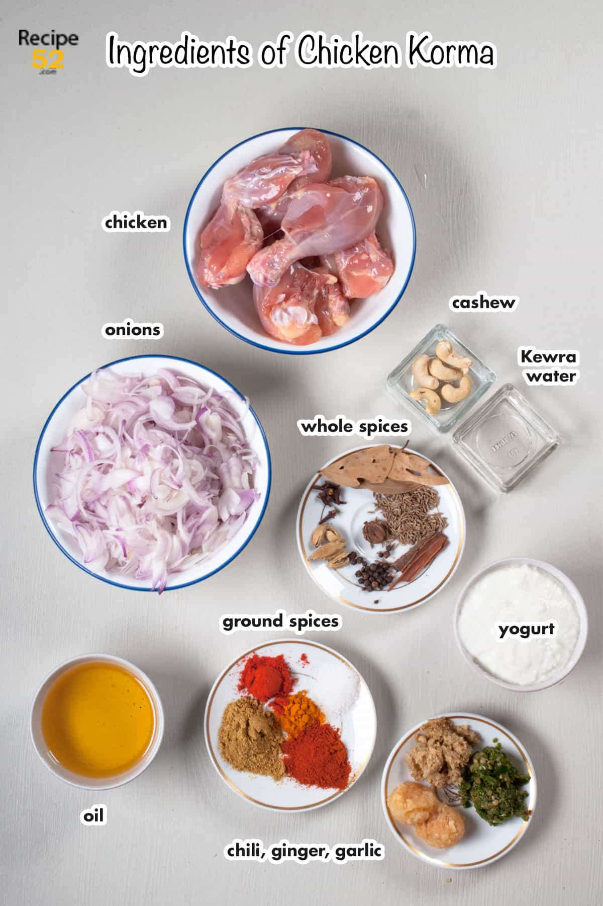

Subbalakshmi Khan, a professional dancer cooks up a Mughlai chicken korma with generous amounts of spices and Indian flavours. Korma is a gravy dish that is usually made with yogurt, lots of nuts and spices. A Mughal era original, Chicken Korma is the perfect dinner party dish that is easy, quick and a no fuss recipe.
Chicken cooked in a host of spices such as cardamom, cloves, garlic, coriander, chili powder, ginger paste along with a mixture of fried onions and yogurt. Flavoured with saffron, this chicken korma is the perfect dinner dish to cook tonight.